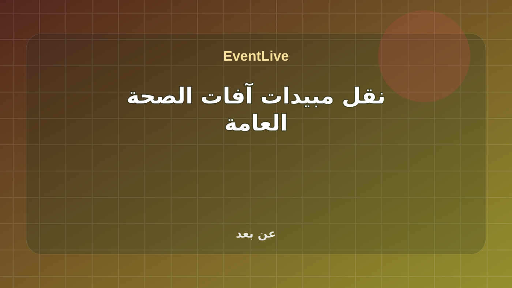

منتهية · فعالية
نقل مبيدات آفات الصحة العامة
نقل مبيدات آفات الصحة العامة. طريقة الحضور: عن بعد. نوع الورشة: عامة. لغة العرض: العربية انتهى وقت ورشة العمل. المصدر الرسمي: الهيئة العامة للغذاء والدواء.
المدينةعن بعد
البداية٠٦/٠٧/٢٠٢٦، ١٠:٠٠ ص
النهاية٠٦/٠٧/٢٠٢٦، ١١:٠٠ ص
الحالة الحيةجاري حساب الوقت...
8/8
جاهزوقت واضح
جاهزمصدر موثوق
جاهزمدينة محددة
جاهزرابط حضور
جاهزجدول حي
جاهزرابط مشاركة
جاهزتصنيف مفهوم
جاهزجمهور مناسب
محاور البرنامج
نقل مبيدات آفات الصحة العامة. طريقة الحضور: عن بعد. نوع الورشة: عامة. لغة العرض: العربية انتهى وقت ورشة العمل
المدة2026-07-06T10:00:00+03:00 إلى 2026-07-06T11:00:00+03:00
المزودSaudi Food and Drug Authority
الأهداف
- نقل مبيدات آفات الصحة العامة
المميزات
- طريقة الحضور: عن بعد
- نوع الورشة: عامة
- لغة العرض: العربية انتهى وقت ورشة العمل
- جدول حي: جلسة رسمية واحدة
- الوقت: 2026-07-06T10:00:00+03:00 إلى 2026-07-06T11:00:00+03:00
الجدول الحي
نقل مبيدات آفات الصحة العامة